All-season Arctic sea ice thickness using new summer ICESat-2 ice thickness estimates#
Summary: In this notebook, we provide a preliminary look at all-season sea ice thickness (and input snow loading) estimates from ICESat-2, including comparisons with a CryoSat-2 thickness product and a preliminary ICESat-2/CryoSat-2 snow depth product.
Author: Alek Petty
Version history:
Version 2 (09/25/2025): updated with new MERRA-2 and ERA5 snow loading and some other tweaks.
Version 1 (05/01/2025)
# Regular Python library imports
import xarray as xr
import numpy as np
import pandas as pd
import pyproj
import scipy.interpolate
import matplotlib.pyplot as plt
import glob
from datetime import datetime
import cartopy.crs as ccrs
import cartopy.feature as cfeature
import os
import matplotlib.dates as mdates
# Helper functions for reading the data from the bucket and plotting
from utils.read_data_utils import read_IS2SITMOGR4, read_book_data
from utils.plotting_utils import static_winter_comparison_lineplot, staticArcticMaps, interactiveArcticMaps, compute_gridcell_winter_means, interactive_winter_comparison_lineplot # Plotting utils
from utils.extra_funcs import read_IS2SITMOGR4S, regrid_ubris_to_is2, get_cs2is2_snow, apply_interpolation_time
# Plotting dependencies
#%config InlineBackend.figure_format = 'retina'
import matplotlib as mpl
# Remove warnings to improve display
import warnings
warnings.filterwarnings('ignore')
# Get the current working directory
current_directory = os.getcwd()
# Set some plotting parameters
mpl.rcParams.update({
"text.usetex": False, # Use LaTeX for rendering
"font.family": "sans-serif",
"lines.linewidth": 0.8,
"font.size": 9,
#"lines.alpha": 0.8,
"axes.labelsize": 8,
"xtick.labelsize": 8,
"ytick.labelsize": 8,
"legend.fontsize": 7
})
mpl.rcParams['font.sans-serif'] = ['Arial']
mpl.rcParams['figure.dpi'] = 300
# add '_int' if we want to mask using the interpolated/smoothed data.
int_str='_int'
# Decide on which reanalysis SM-LG dataset to use
reanalysis = 'm2'
if reanalysis == 'm2':
reanalysis_two = 'e5'
else:
reanalysis_two = 'm2'
# Load the already wrangled data (see the relevant data wrangling notebook for more background on that)
IS2_CS2_allseason = xr.open_dataset('./data/book_data_allseason_v2.nc')
print("Successfully loaded all-season v2 wrangled dataset")
Successfully loaded all-season v2 wrangled dataset
# Get some map proj info needed for later functions
out_proj = 'EPSG:3411'
mapProj = pyproj.Proj("+init=" + out_proj)
xIS2 = IS2_CS2_allseason.x.values
yIS2 = IS2_CS2_allseason.y.values
xptsIS2, yptsIS2 = np.meshgrid(xIS2, yIS2)
out_lons = IS2_CS2_allseason.longitude.values
out_lats = IS2_CS2_allseason.latitude.values
rename_dict = {
'snow_depth_sm_'+reanalysis: 'snow_depth_sm',
'snow_depth_sm_'+reanalysis+'_int': 'snow_depth_sm_int',
'snow_density_sm_'+reanalysis: 'snow_density_sm',
'snow_density_sm_'+reanalysis+'_int': 'snow_density_sm_int',
'ice_thickness_sm_'+reanalysis: 'ice_thickness_sm',
'ice_thickness_sm_'+reanalysis+'_int': 'ice_thickness_sm_int',
# Add more if needed
}
IS2_CS2_allseason = IS2_CS2_allseason.rename(rename_dict)
IS2_CS2_allseason
<xarray.Dataset> Size: 990MB
Dimensions: (time: 33, y: 448, x: 304)
Coordinates:
* time (time) datetime64[ns] 264B 2018-11-15 ......
* x (x) float32 1kB -3.838e+06 ... 3.738e+06
* y (y) float32 2kB 5.838e+06 ... -5.338e+06
longitude (y, x) float32 545kB 168.3 168.1 ... -9.999
latitude (y, x) float32 545kB 31.1 31.2 ... 34.47
Data variables: (12/53)
crs (time) float64 264B ...
ice_thickness_sm_e5 (time, y, x) float32 18MB ...
ice_thickness_sm (time, y, x) float32 18MB ...
ice_thickness_unc (time, y, x) float32 18MB ...
num_segments (time, y, x) float32 18MB ...
mean_day_of_month (time, y, x) float32 18MB ...
... ...
snow_density_w99r_int (time, y, x) float32 18MB ...
ice_density_j22_int (time, y, x) float32 18MB ...
ice_thickness_cs2_ubris (time, y, x) float64 36MB ...
cs2_sea_ice_type_UBRIS (time, y, x) float64 36MB ...
cs2_sea_ice_density_UBRIS (time, y, x) float64 36MB ...
cs2is2_snow_depth (time, y, x) float64 36MB ...
Attributes:
contact: Alek Petty (akpetty@umd.edu)
description: Aggregated IS2SITMOGR4 summer V1 dataset.
history: Created 23/07/25IS2_CS2_allseason.snow_depth_sm_int.isel(time=6).plot(figsize=(6, 4))
<matplotlib.collections.QuadMesh at 0x3086bb250>
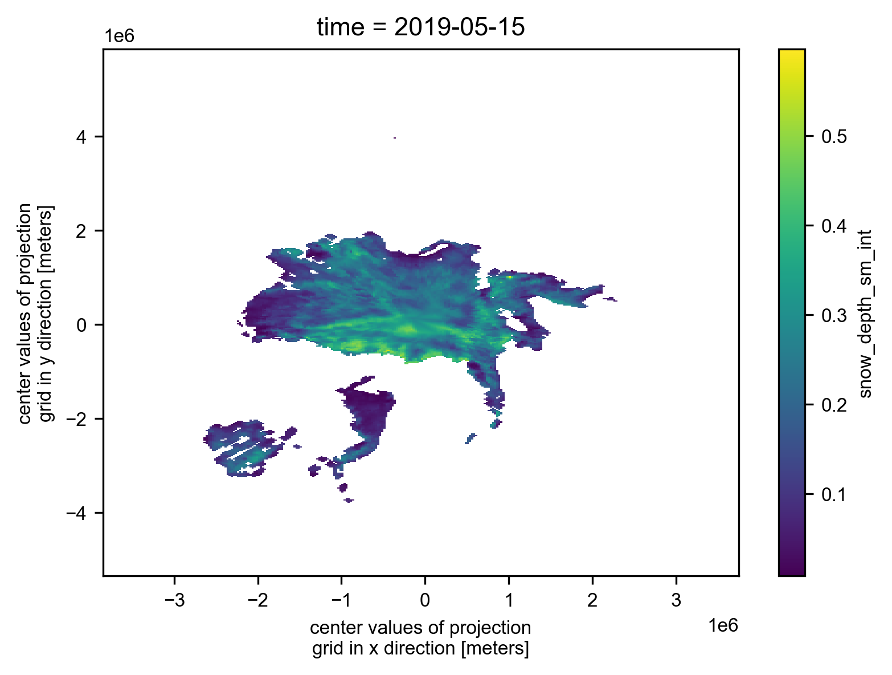
# Plot the region mask just as a quick sanity check
im = IS2_CS2_allseason.region_mask.plot(x="longitude", y="latitude", transform=ccrs.PlateCarree(), cmap="viridis", zorder=3,
cbar_kwargs={'pad':0.01,'shrink': 0.8,'extend':'both', 'label':'Region Mask', 'location':'left'},
vmin=0, vmax=25,
subplot_kws={'projection':ccrs.NorthPolarStereo(central_longitude=-45)})
ax = im.axes
ax.coastlines()
ax.set_extent([-179, 179, 68, 90], crs=ccrs.PlateCarree())
ax.gridlines(draw_labels=True)
plt.show()

# Inner Arctic domain (Central_Arctic Beaufort_Sea Chukchi_Sea East_Siberian_Sea Laptev_Sea Kara_Sea)
innerArctic = [1,2,3,4,5,6]
# Inner Arcic plus Barents and Greenland
#innerArctic = [1,2,3,4,5,6,7,8]
# Plot the individual monthly IS-2 summer thickness data
# Select only the summer months
summer_months = [5, 6, 7, 8] # May=5, June=6, July=7, August=8
IS2_CS2_summer = IS2_CS2_allseason.sel(time=IS2_CS2_allseason.time.dt.month.isin(summer_months))
# Group by year for plotting purposes
grouped_by_year = IS2_CS2_summer.groupby('time.year')
fig, axes = plt.subplots(nrows=len(grouped_by_year.groups), ncols=len(summer_months),
subplot_kw={'projection': ccrs.NorthPolarStereo(central_longitude=-45)},
figsize=(7, 6.1))
# Iterate over each year
for year_idx, (year, year_data) in enumerate(grouped_by_year):
#print(year_idx)# Group by month within each year
grouped_by_month = year_data.groupby('time.month')
for month_idx, (month, month_data) in enumerate(grouped_by_month):
ax = axes[year_idx, month_idx]
im = month_data.isel(time=0)['ice_thickness_sm_int'].plot(ax=ax, x="longitude", y="latitude",
transform=ccrs.PlateCarree(), cmap="viridis",
vmin=0, vmax=5, add_colorbar=False)
ice_conc = month_data.isel(time=0)['sea_ice_conc']
lons=ice_conc.longitude
lats=ice_conc.latitude
#print(lons.shape)
mask_pos = lons >= 0
mask_neg = lons < 0
# Plot contours for positive longitudes
cs_pos = ax.contour(lons.where(mask_pos), lats, ice_conc.where(mask_pos),
levels=[0.5], colors='c', linewidths=0.7,
transform=ccrs.PlateCarree())
# Plot contours for negative longitudes
cs_neg = ax.contour(lons.where(mask_neg), lats, ice_conc.where(mask_neg),
levels=[0.5], colors='c', linewidths=0.7 ,
transform=ccrs.PlateCarree())
ax.set_extent([-179, 179, 66, 90], crs=ccrs.PlateCarree())
ax.text(0.98, 0.9, f'{year}-{month:02d}', transform=ax.transAxes, va='bottom', ha='right')
ax.set_title('')
ax.coastlines(linewidth=0.15, color = 'black', zorder = 2) # Coastlines
ax.add_feature(cfeature.LAND, color ='0.95', zorder = 1) # Land
#ax.add_feature(cfeature.LAKES, color = 'grey', zorder = 5) # Lakes
ax.gridlines(draw_labels=False, linewidth=0.25, color='gray', alpha=0.7, linestyle='--', zorder=3) # Gridlines
axes[2, 3].set_visible(False)
# Add a colorbar at the bottom
cbar = fig.colorbar(im, ax=axes, orientation='horizontal', extend='both', fraction=0.03, pad=0.1)
cbar.set_label('Sea ice thickness (m)')
plt.subplots_adjust(left=0.02, right=0.98, top=0.98, bottom=0.15, wspace=0.01, hspace=0.03)
plt.savefig('./figs/maps_is2_summer_months_int_'+reanalysis+'.png', dpi=300, facecolor="white")
plt.show()

# Plot the individual monthly CS-2 summer thickness data
fig, axes = plt.subplots(nrows=len(grouped_by_year.groups), ncols=len(summer_months),
subplot_kw={'projection': ccrs.NorthPolarStereo(central_longitude=-45)},
figsize=(7, 6.1))
# Iterate over each year
for year_idx, (year, year_data) in enumerate(grouped_by_year):
#print(year_idx)# Group by month within each year
grouped_by_month = year_data.groupby('time.month')
for month_idx, (month, month_data) in enumerate(grouped_by_month):
ax = axes[year_idx, month_idx]
im = month_data.isel(time=0).ice_thickness_cs2_ubris.plot(ax=ax, x="longitude", y="latitude",
transform=ccrs.PlateCarree(), cmap="viridis",
vmin=0, vmax=5, add_colorbar=False)
ax.set_extent([-179, 179, 66, 90], crs=ccrs.PlateCarree())
ax.text(0.98, 0.9, f'{year}-{month:02d}', transform=ax.transAxes, va='bottom', ha='right')
ax.set_title('')
ax.coastlines(linewidth=0.15, color = 'black', zorder = 2) # Coastlines
ax.add_feature(cfeature.LAND, color ='0.95', zorder = 1) # Land
#ax.add_feature(cfeature.LAKES, color = 'grey', zorder = 5) # Lakes
ax.gridlines(draw_labels=False, linewidth=0.25, color='gray', alpha=0.7, linestyle='--', zorder=3) # Gridlines
axes[2, 3].set_visible(False)
# Add a colorbar at the bottom
cbar = fig.colorbar(im, ax=axes, orientation='horizontal', extend='both', fraction=0.03, pad=0.1)
cbar.set_label('Sea ice thickness (m)')
plt.subplots_adjust(left=0.02, right=0.98, top=0.98, bottom=0.15, wspace=0.01, hspace=0.03)
plt.savefig('./figs/maps_cs2_summer_months_v2.png', dpi=300, facecolor="white")
plt.show()
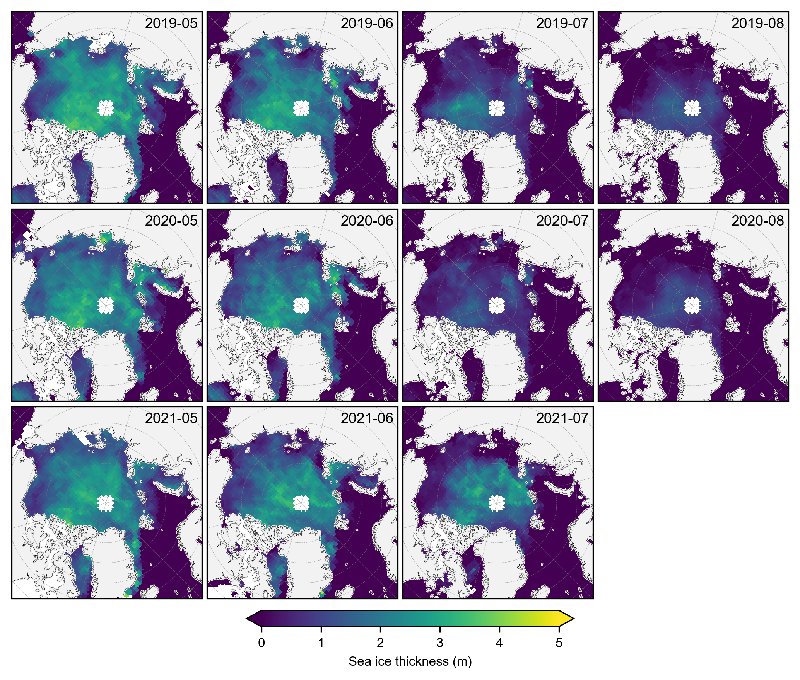
# Plot the individual monthly IS-2 vs CS-2 summer thickness data differences
fig, axes = plt.subplots(nrows=len(grouped_by_year.groups), ncols=len(summer_months),
subplot_kw={'projection': ccrs.NorthPolarStereo(central_longitude=-45)},
figsize=(7, 6.1))
# Iterate over each year
for year_idx, (year, year_data) in enumerate(grouped_by_year):
#print(year_idx)# Group by month within each year
grouped_by_month = year_data.groupby('time.month')
for month_idx, (month, month_data) in enumerate(grouped_by_month):
ax = axes[year_idx, month_idx]
im = (month_data.isel(time=0).ice_thickness_sm_int - month_data.isel(time=0).ice_thickness_cs2_ubris).plot(ax=ax, x="longitude", y="latitude",
transform=ccrs.PlateCarree(), cmap="RdBu",
vmin=-3, vmax=3, add_colorbar=False)
ax.set_extent([-179, 179, 66, 90], crs=ccrs.PlateCarree())
ax.text(0.98, 0.9, f'{year}-{month:02d}', transform=ax.transAxes, va='bottom', ha='right')
ax.set_title('')
ax.coastlines(linewidth=0.15, color = 'black', zorder = 2) # Coastlines
ax.add_feature(cfeature.LAND, color ='0.95', zorder = 1) # Land
#ax.add_feature(cfeature.LAKES, color = 'grey', zorder = 5) # Lakes
ax.gridlines(draw_labels=False, linewidth=0.25, color='gray', alpha=0.7, linestyle='--', zorder=3) # Gridlines
axes[2, 3].set_visible(False)
# Add a colorbar at the bottom
cbar = fig.colorbar(im, ax=axes, orientation='horizontal', extend='both', fraction=0.03, pad=0.1)
cbar.set_label('Sea ice thickness difference (m)')
plt.subplots_adjust(left=0.02, right=0.98, top=0.98, bottom=0.15, wspace=0.01, hspace=0.03)
plt.savefig('./figs/maps_is2_cs2_summer_anoms_'+reanalysis+'.png', dpi=300, facecolor="white")
plt.show()
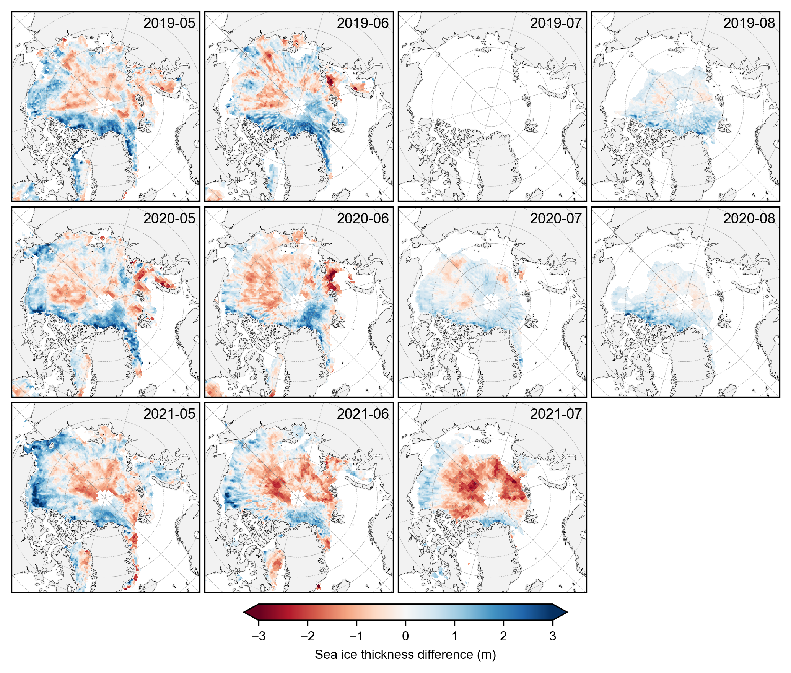
Time series analysis#
Aim here is to generate time-series plots of the data. Note the extra region masking and also common data masking, where we only analyze grid-cells with consistent data across the given variables in the given month.
Play around with different options here as desired (a few opiotns provided in the commented out lines). Note that later we apply a different masking method, only looking at data where both variables have data across ALL months (not just for a given month).
# Again we can apply a region or ice type mask as desired
IS2_CS2_allseason = IS2_CS2_allseason.where(IS2_CS2_allseason.region_mask.isin(innerArctic))
# Could also apply ice type masking here too if desired
#IS2_CS2_allseason = IS2_CS2_allseason.where(IS2_CS2_allseason.region_mask.isin([1]))
#IS2_CS2_allseason = IS2_CS2_allseason.where(IS2_CS2_allseason.ice_type==1)
def mask_and_concat_ice_thickness(IS2_CS2_allseason, start_date="Oct 2018", end_date="July 2021", int_str=''):
"""
Masks and concatenates ice thickness data over a specified date range.
Args:
IS2_CS2_allseason (xarray.Dataset): The dataset containing ice thickness data.
start_date (str): The start date for the date range (default is "Oct 2018").
end_date (str): The end date for the date range (default is "Apr 2023").
Returns:
xarray.Dataset: Concatenated dataset with applied masks.
"""
date_range = pd.date_range(start=start_date, end=end_date, freq='MS') + pd.Timedelta(days=14)
IS2_CS2_allseason_region_common_list = []
vars_to_check = ["ice_thickness_cs2_ubris", "ice_thickness_sm"+int_str]
for date in date_range:
#print(date)
try:
#print('try')
monthly_data_to_mask = IS2_CS2_allseason.sel(time=date).copy(deep=True)
for var_check in vars_to_check:
#print(var_check)
if np.isfinite(np.nanmean(monthly_data_to_mask[var_check])):
monthly_data_to_mask = monthly_data_to_mask.where(monthly_data_to_mask[var_check] > 0.0)
IS2_CS2_allseason_region_common_list.append(monthly_data_to_mask)
except:
print('except')
continue
return xr.concat(IS2_CS2_allseason_region_common_list, "time")
# Apply function to mask and concatenate ice thickness data where all variables have valid data for the given month
IS2_CS2_allseason_region_common = mask_and_concat_ice_thickness(IS2_CS2_allseason, int_str=int_str)
except
# plot monthly maps again to see how things look with the common mask applied (mostly that CS-2 data is removed where we have no IS-2 data)
summer_months = [5, 6, 7, 8] # May=5, June=6, July=7, August=8
IS2_CS2_summer = IS2_CS2_allseason_region_common.sel(time=IS2_CS2_allseason_region_common.time.dt.month.isin(summer_months))
# Group by year
grouped_by_year = IS2_CS2_summer.groupby('time.year')
# Create a figure with subplots
fig, axes = plt.subplots(nrows=len(grouped_by_year.groups), ncols=len(summer_months),
subplot_kw={'projection': ccrs.NorthPolarStereo(central_longitude=-45)},
figsize=(7, 6.1))
for year_idx, (year, year_data) in enumerate(grouped_by_year):
#print(year_idx)# Group by month within each year
grouped_by_month = year_data.groupby('time.month')
for month_idx, (month, month_data) in enumerate(grouped_by_month):
ax = axes[year_idx, month_idx]
im = month_data.isel(time=0)['ice_thickness_sm'+int_str].plot(ax=ax, x="longitude", y="latitude",
transform=ccrs.PlateCarree(), cmap="viridis",
vmin=0, vmax=5, add_colorbar=False)
ax.set_extent([-179, 179, 66, 90], crs=ccrs.PlateCarree())
ax.text(0.98, 0.9, f'{year}-{month:02d}', transform=ax.transAxes, va='bottom', ha='right')
ax.set_title('')
ax.coastlines(linewidth=0.15, color = 'black', zorder = 2) # Coastlines
ax.add_feature(cfeature.LAND, color ='0.95', zorder = 1) # Land
#ax.add_feature(cfeature.LAKES, color = 'grey', zorder = 5) # Lakes
ax.gridlines(draw_labels=False, linewidth=0.25, color='gray', alpha=0.7, linestyle='--', zorder=3) # Gridlines
axes[2, 3].set_visible(False)
cbar = fig.colorbar(im, ax=axes, orientation='horizontal', extend='both', fraction=0.03, pad=0.1)
cbar.set_label('Sea ice thickness (m)')
plt.subplots_adjust(left=0.02, right=0.98, top=0.98, bottom=0.15, wspace=0.01, hspace=0.03)
plt.savefig('./figs/maps_is2_summer_months_cm'+int_str+reanalysis+'_v2.png', dpi=300, facecolor="white")
plt.show()

# Do same for CS-2 data
IS2_CS2_summer = IS2_CS2_allseason_region_common.sel(time=IS2_CS2_allseason_region_common.time.dt.month.isin(summer_months))
# Group by year
grouped_by_year = IS2_CS2_summer.groupby('time.year')
fig, axes = plt.subplots(nrows=len(grouped_by_year.groups), ncols=len(summer_months),
subplot_kw={'projection': ccrs.NorthPolarStereo(central_longitude=-45)},
figsize=(7, 6.1))
for year_idx, (year, year_data) in enumerate(grouped_by_year):
#print(year_idx)# Group by month within each year
grouped_by_month = year_data.groupby('time.month')
for month_idx, (month, month_data) in enumerate(grouped_by_month):
ax = axes[year_idx, month_idx]
im = month_data.isel(time=0).ice_thickness_cs2_ubris.plot(ax=ax, x="longitude", y="latitude",
transform=ccrs.PlateCarree(), cmap="viridis",
vmin=0, vmax=5, add_colorbar=False)
ax.set_extent([-179, 179, 66, 90], crs=ccrs.PlateCarree())
ax.text(0.98, 0.9, f'{year}-{month:02d}', transform=ax.transAxes, va='bottom', ha='right')
ax.set_title('')
ax.coastlines(linewidth=0.15, color = 'black', zorder = 2) # Coastlines
ax.add_feature(cfeature.LAND, color ='0.95', zorder = 1) # Land
#ax.add_feature(cfeature.LAKES, color = 'grey', zorder = 5) # Lakes
ax.gridlines(draw_labels=False, linewidth=0.25, color='gray', alpha=0.7, linestyle='--', zorder=3) # Gridlines
axes[2, 3].set_visible(False)
cbar = fig.colorbar(im, ax=axes, orientation='horizontal', extend='both', fraction=0.03, pad=0.1)
cbar.set_label('Sea ice thickness (m)')
plt.subplots_adjust(left=0.02, right=0.98, top=0.98, bottom=0.15, wspace=0.01, hspace=0.03)
plt.savefig('./figs/maps_cs2_summer_months_cm'+int_str+'_v2.png', dpi=300, facecolor="white")
plt.show()
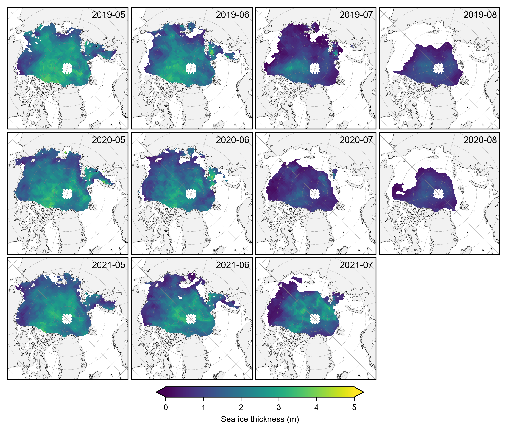
# Test without loffset
step1 = IS2_CS2_allseason_region_common.mean(dim=("x","y"), skipna=True, keep_attrs=True)
print("After mean - dimensions:", step1.dims)
# Test resample without loffset
step2 = step1.resample(time='1M', label='left')
print("Resample operation successful!")
# Test asfreq
IS2_CS2_allseason_region_means = step2.asfreq()
print("Complete operation successful!")
After mean - dimensions: FrozenMappingWarningOnValuesAccess({'time': 33})
Resample operation successful!
Complete operation successful!
# Generate Arctic basin-mean time series
IS2_CS2_allseason_region_means = IS2_CS2_allseason_region_common.mean(dim=("x","y"), skipna=True, keep_attrs=True).resample(time='1M', label='left', offset='15D').asfreq()
# Commented out as I now do this earlier, but if not...
# Drop later data as no public SM-LG data. Drop if you want to show the extended IS-2 data on the plot.
#end_date = "2021-07-21"
#IS2_CS2_allseason_region_means = IS2_CS2_allseason_region_means.sel(time=slice(None, end_date))
# Plot Arctic basin-mean time series
fig, axes = plt.subplots(nrows=6, ncols=1, figsize=(6.8, 7.6))
# Filter out NaN values
mask = ~np.isnan(IS2_CS2_allseason_region_means["ice_thickness_cs2_ubris"].values) & ~np.isnan(IS2_CS2_allseason_region_means["ice_thickness_sm"+int_str].values)
# Calculate the correlation coefficient
corr_sm_1 = np.corrcoef(IS2_CS2_allseason_region_means["ice_thickness_cs2_ubris"].values[mask],
IS2_CS2_allseason_region_means["ice_thickness_sm"+int_str].values[mask], rowvar=False)[0, 1]
bias_sm_1 = np.nanmean(IS2_CS2_allseason_region_means["ice_thickness_sm"+int_str] -
IS2_CS2_allseason_region_means["ice_thickness_cs2_ubris"])
# Calculate the correlation coefficient
corr_sm_2 = np.corrcoef(IS2_CS2_allseason_region_means["ice_thickness_cs2_ubris"].values[mask],
IS2_CS2_allseason_region_means["ice_thickness_sm_"+reanalysis_two+int_str].values[mask], rowvar=False)[0, 1]
bias_sm_2 = np.nanmean(IS2_CS2_allseason_region_means["ice_thickness_sm_"+reanalysis_two+int_str] -
IS2_CS2_allseason_region_means["ice_thickness_cs2_ubris"])
bias_sm_3 = np.nanmean(IS2_CS2_allseason_region_means["ice_thickness"+int_str] -
IS2_CS2_allseason_region_means["ice_thickness_cs2_ubris"])
# Plot sea ice thickness
axes[0].plot(IS2_CS2_allseason_region_means.time, IS2_CS2_allseason_region_means["ice_thickness"+int_str], 'ko-', markersize=3, label='IS2/NSIM')
axes[0].plot(IS2_CS2_allseason_region_means.time, IS2_CS2_allseason_region_means["ice_thickness_sm"+int_str], 'bo-', markersize=3, label='IS2/SMLG-'+reanalysis.capitalize())
axes[0].plot(IS2_CS2_allseason_region_means.time, IS2_CS2_allseason_region_means["ice_thickness_sm_"+reanalysis_two+int_str], 'bo--', markersize=3, label='IS2/SMLG-'+reanalysis_two.capitalize())
axes[0].plot(IS2_CS2_allseason_region_means.time, IS2_CS2_allseason_region_means["ice_thickness_cs2_ubris"], 'ro-', markersize=3, label='CS2/SMLG-M2')
axes[0].set_ylabel('Sea ice thickness (m)')
axes[0].legend(loc='upper right', ncol=4, frameon=False)
axes[0].set_yticks([1, 2, 3])
axes[0].set_ylim([0.4,3.9])
axes[0].grid(axis='y') # Only show grid lines for the x-axis
axes[0].tick_params(axis='x', which='both', bottom=False, top=False, labelbottom=False) # Remove x-axis ticks and labels
# Add statistics as text annotations
axes[0].text(0.06, 0.91, f'r: {corr_sm_1:.2f}, MB: {bias_sm_1:.2f} m ('+reanalysis.capitalize()+')', transform=axes[0].transAxes, fontsize=8, color='blue')
axes[0].text(0.06, 0.76, f'r: {corr_sm_2:.2f}, MB: {bias_sm_2:.2f} m ('+reanalysis_two.capitalize()+')', transform=axes[0].transAxes, fontsize=8, color='blue')
# Plot thickness anomaly relative to CS-2_UIT
axes[1].plot(IS2_CS2_allseason_region_means.time, IS2_CS2_allseason_region_means["ice_thickness_sm"+int_str] - IS2_CS2_allseason_region_means["ice_thickness_cs2_ubris"], 'bo-', markersize=3, label='')
axes[1].plot(IS2_CS2_allseason_region_means.time, IS2_CS2_allseason_region_means["ice_thickness_sm_"+reanalysis_two+int_str] - IS2_CS2_allseason_region_means["ice_thickness_cs2_ubris"], 'bo--', markersize=3, label='')
axes[1].plot(IS2_CS2_allseason_region_means.time, IS2_CS2_allseason_region_means["ice_thickness"+int_str] - IS2_CS2_allseason_region_means["ice_thickness_cs2_ubris"], 'ko-', markersize=3, label='')
axes[1].set_ylabel('Thickness anomaly (m)')
axes[1].set_yticks([-0.5, 0, 0.5])
axes[1].set_ylim([-0.5, 0.9])
axes[1].legend(loc='upper right', ncol=2, frameon=False)
axes[1].grid(axis='y') # Only show grid lines for the x-axis
axes[1].tick_params(axis='x', which='both', bottom=False, top=False, labelbottom=False) # Remove x-axis ticks and labels
# Plot snow depth
axes[2].plot(IS2_CS2_allseason_region_means.time, IS2_CS2_allseason_region_means["snow_depth"+int_str], 'ko-', markersize=3, label='NSIM')
axes[2].plot(IS2_CS2_allseason_region_means.time, IS2_CS2_allseason_region_means["snow_depth_sm"+int_str], 'bo-', markersize=3, label='SMLG-'+reanalysis.capitalize())
axes[2].plot(IS2_CS2_allseason_region_means.time, IS2_CS2_allseason_region_means["snow_depth_sm_"+reanalysis_two+int_str], 'bo--', markersize=3, label='SMLG-'+reanalysis_two.capitalize())
axes[2].plot(IS2_CS2_allseason_region_means.time, IS2_CS2_allseason_region_means["cs2is2_snow_depth"], 'mo-', markersize=3, label='IS2/CS2')
axes[2].plot(IS2_CS2_allseason_region_means.time, IS2_CS2_allseason_region_means["snow_depth_mw99r"], 'go-', markersize=3, label='MW99r')
axes[2].set_ylabel('Snow depth (m)')
axes[2].set_yticks([0, 0.1, 0.2])
axes[2].set_ylim([0,0.3])
axes[2].legend(loc='upper right', ncol=5, frameon=False)
axes[2].grid(axis='y') # Only show grid lines for the y-axis
axes[2].tick_params(axis='x', which='both', bottom=False, top=False, labelbottom=False) # Remove x-axis ticks and labels
# Plot snow density
axes[3].plot(IS2_CS2_allseason_region_means.time, IS2_CS2_allseason_region_means["snow_density"+int_str], 'ko-', markersize=3, label='NSIM')
axes[3].plot(IS2_CS2_allseason_region_means.time, IS2_CS2_allseason_region_means["snow_density_sm"+int_str], 'bo-', markersize=3, label='SMLG-'+reanalysis.capitalize())
axes[3].plot(IS2_CS2_allseason_region_means.time, IS2_CS2_allseason_region_means["snow_density_sm_"+reanalysis_two+int_str], 'bo--', markersize=3, label='SMLG-'+reanalysis_two.capitalize())
axes[3].plot(IS2_CS2_allseason_region_means.time, IS2_CS2_allseason_region_means["snow_density_w99r"], 'go-', markersize=3, label='W99r')
axes[3].set_ylabel('Snow density (kg/m³)')
axes[3].set_yticks([100, 200, 300, 400, 500])
axes[3].set_ylim([100,500])
axes[3].legend(loc='upper right', ncol=4,frameon=False)
axes[3].grid(axis='y') # Only show grid lines for the x-axis
axes[3].tick_params(axis='x', which='both', bottom=False, top=False, labelbottom=False) # Remove x-axis ticks and labels
# Plot ice density
#axes[4].hlines(y=916, xmin=np.datetime64('2018-11-15'), xmax=np.datetime64('2021-07-15'), color='b', linestyle='-', label='IS-2', linewidth=1)
axes[4].plot(IS2_CS2_allseason_region_means.time, IS2_CS2_allseason_region_means["ice_density"], 'bo-', label='IS2', markersize=3)
axes[4].plot(IS2_CS2_allseason_region_means.time, IS2_CS2_allseason_region_means["cs2_sea_ice_density_UBRIS"], 'ro-', label='CS2', markersize=3)
axes[4].plot(IS2_CS2_allseason_region_means.time, IS2_CS2_allseason_region_means["ice_density_j22"+int_str], 'yo-', label='J22', markersize=3)
axes[4].set_ylabel('Ice density (kg/m³)')
axes[4].grid(axis='y') # Only show grid lines for the x-axis
axes[4].set_ylim([870,970])
#axes[4].set_xlim([np.datetime64('2018-09'), np.datetime64('2021-09')])
axes[4].tick_params(axis='x', which='both', bottom=False, top=False, labelbottom=False) # Remove x-axis ticks and labels
axes[4].legend(loc='upper right', ncol=4, frameon=False)
# Plot ice concentration
axes[5].plot(IS2_CS2_allseason_region_means.time, IS2_CS2_allseason_region_means.sea_ice_conc, 'mo-', markersize=3)
axes[5].set_ylabel('Ice concentration')
axes[5].grid(axis='y') # Only show grid lines for the x-axis
axes[5].set_ylim([0.8,1.])
# Set x-axis limits and ticks
start_date = np.datetime64('2018-11-01')
end_date = np.datetime64('2021-07-30')
for ax in axes:
ax.spines['top'].set_visible(False)
ax.spines['right'].set_visible(False)
ax.set_xlim([start_date, end_date]) # Apply same x-limits to all subplots
axes[5].set_xlabel('Date')
axes[5].xaxis.set_major_locator(mdates.MonthLocator(bymonthday=15,interval=3)) # Show ticks every 6 months
axes[5].xaxis.set_major_formatter(mdates.DateFormatter('%Y-%m')) # Format as YYYY-MM
panel_letters = ['(a)', '(b)', '(c)', '(d)', '(e)', '(f)']
for ax, letter in zip(axes, panel_letters):
ax.text(0.01, 0.93, letter, transform=ax.transAxes, va='bottom', ha='left')
# Convert time to pandas DatetimeIndex for easy filtering
times = pd.to_datetime(IS2_CS2_allseason_region_means['time'].values)
for year in np.unique(times.year):
for month in [5, 6, 7, 8]: # May, June, July
# Find the start and end of the month
start = pd.Timestamp(year=year, month=month, day=1)
if month < 12:
end = pd.Timestamp(year=year, month=month+1, day=1)
else:
end = pd.Timestamp(year=year+1, month=1, day=1)
# Only shade if within the data range
if (start >= times.min()) and (start <= times.max()):
axes[0].axvspan(start, end, color='0.8', alpha=0.2, linewidth=0)
axes[1].axvspan(start, end, color='0.8', alpha=0.2, linewidth=0)
axes[2].axvspan(start, end, color='0.8', alpha=0.2, linewidth=0)
axes[3].axvspan(start, end, color='0.8', alpha=0.2, linewidth=0)
axes[4].axvspan(start, end, color='0.8', alpha=0.2, linewidth=0)
axes[5].axvspan(start, end, color='0.8', alpha=0.2, linewidth=0)
plt.subplots_adjust(left=0.08, right=0.99, top=0.99, bottom=0.06, hspace=0.11) # Adjust these values to reduce whitespace
plt.savefig('./figs/allseason_timeseries_6rows'+int_str+'r'+str(innerArctic[0])+'-'+str(innerArctic[1])+'_'+reanalysis+'.pdf', dpi=300)
plt.show()
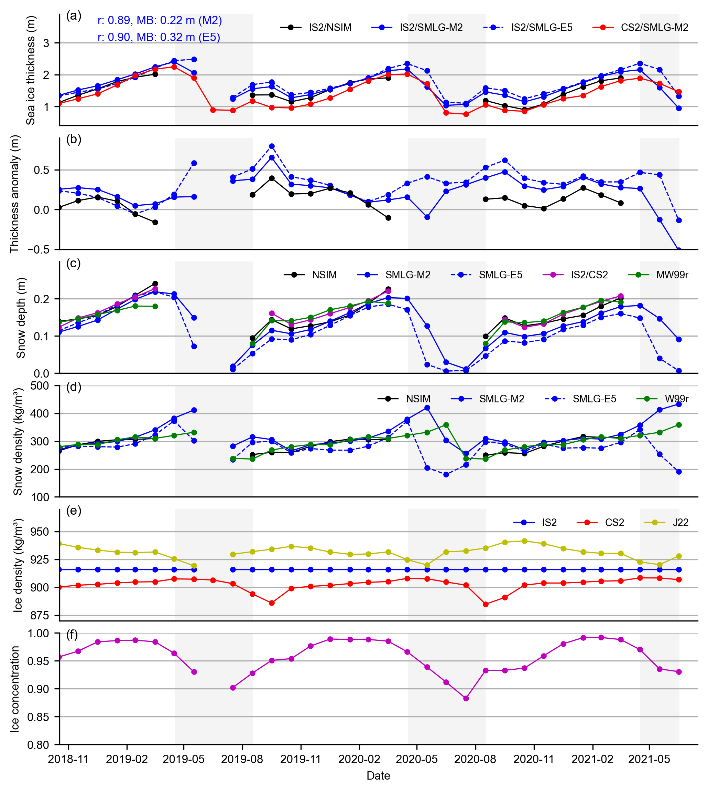
Monthly common/perennial masking#
Now I want to mask the data by month as things are a bit messy with averaging summer months across the IS-2 thickness dataset as lost of missing data which impacts the averages a lot. So the approach here is stricter masking, using just grid-cells where both datasets (IS-2 and CS-2) have data every month. A perennial masking of sorts.
def mask_and_concat_ice_thickness_monthly(IS2_CS2_allseason, int_str='_int'):
"""
Creates a new dataset with just the two key variables and masks entire time series
for grid cells that have any NaN values in either variable at any time.
"""
vars_to_keep = ["ice_thickness_cs2_ubris", "ice_thickness_sm"+int_str]
# Create new dataset with just the two variables
dataset = IS2_CS2_allseason[vars_to_keep]
# Find indices where any time is null for either variable
var1_null = dataset[vars_to_keep[0]].isnull().any(dim='time').values
var2_null = dataset[vars_to_keep[1]].isnull().any(dim='time').values
# Combine masks - True where either variable has nulls
has_nulls = var1_null | var2_null
# Apply mask (keep only points where has_nulls is False)
masked_dataset = dataset.where(~has_nulls)
#print(f"Number of valid grid cells: {(~has_nulls).sum().values}")
return masked_dataset, var1_null, var2_null, has_nulls
# Assuming 'IS2_CS2_allseason' is your dataset and 'ice_thickness_sm_int' is the variable of interest
summer_months = [5, 6, 7, 8] # May=5, June=6, July=7, August=8
# Exclude July 2019
exclude_time = '2019-07'
IS2_CS2_summer = IS2_CS2_allseason.sel(
time=IS2_CS2_allseason.time.dt.month.isin(summer_months)
)
IS2_CS2_summer = IS2_CS2_summer.sel(
time=~((IS2_CS2_summer.time.dt.year == 2019) & (IS2_CS2_summer.time.dt.month == 7))
)
# Apply the masking
IS2_CS2_summer_month_mask, var1_null, var2_null, has_nulls = mask_and_concat_ice_thickness_monthly(IS2_CS2_summer)
# Generate the same monthly maps as before but with the stricter common/perennial mask applied.
grouped_by_year = IS2_CS2_summer_month_mask.groupby('time.year')
# Create a figure with subplots
fig, axes = plt.subplots(nrows=len(grouped_by_year.groups), ncols=len(summer_months),
subplot_kw={'projection': ccrs.NorthPolarStereo(central_longitude=-45)},
figsize=(7, 6.1))
# Iterate over each year
for year_idx, (year, year_data) in enumerate(grouped_by_year):
grouped_by_month = year_data.groupby('time.month')
for month_idx, (month, month_data) in enumerate(grouped_by_month):
#print(year_idx, month_idx)
if (int(year_idx)==0) & (int(month_idx)==2):
#print('shift axes')
ax = axes[year_idx, month_idx+1]
else:
ax = axes[year_idx, month_idx]
im = month_data.isel(time=0).ice_thickness_sm_int.plot(ax=ax, x="longitude", y="latitude",
transform=ccrs.PlateCarree(), cmap="viridis",
vmin=0, vmax=5, add_colorbar=False)
ax.set_extent([-179, 179, 66, 90], crs=ccrs.PlateCarree())
ax.text(0.98, 0.9, f'{year}-{month:02d}', transform=ax.transAxes, va='bottom', ha='right')
ax.set_title('')
ax.coastlines(linewidth=0.15, color = 'black', zorder = 2) # Coastlines
ax.add_feature(cfeature.LAND, color ='0.95', zorder = 1) # Land
#ax.add_feature(cfeature.LAKES, color = 'grey', zorder = 5) # Lakes
ax.gridlines(draw_labels=False, linewidth=0.25, color='gray', alpha=0.7, linestyle='--', zorder=3) # Gridlines
# After your main plotting loop, add an empty map at [0, 2]
ax = axes[0, 2]
ax.set_extent([-179, 179, 66, 90], crs=ccrs.PlateCarree())
ax.set_title('')
ax.coastlines(linewidth=0.15, color='black', zorder=2)
ax.add_feature(cfeature.LAND, color='0.95', zorder=1)
ax.gridlines(draw_labels=False, linewidth=0.25, color='gray', alpha=0.7, linestyle='--', zorder=3)
ax.text(0.98, 0.82, '2019-07\n(no data)', transform=ax.transAxes, va='bottom', ha='right')
#axes[0, 2].set_visible(False)
axes[2, 3].set_visible(False)
cbar = fig.colorbar(im, ax=axes, orientation='horizontal', extend='both', fraction=0.03, pad=0.1)
cbar.set_label('Sea ice thickness (m)')
plt.subplots_adjust(left=0.02, right=0.98, top=0.98, bottom=0.15, wspace=0.01, hspace=0.03)
plt.savefig('./figs/maps_is2_summer_months_monthlymask_'+reanalysis+'.png', dpi=300, facecolor="white")
plt.show()
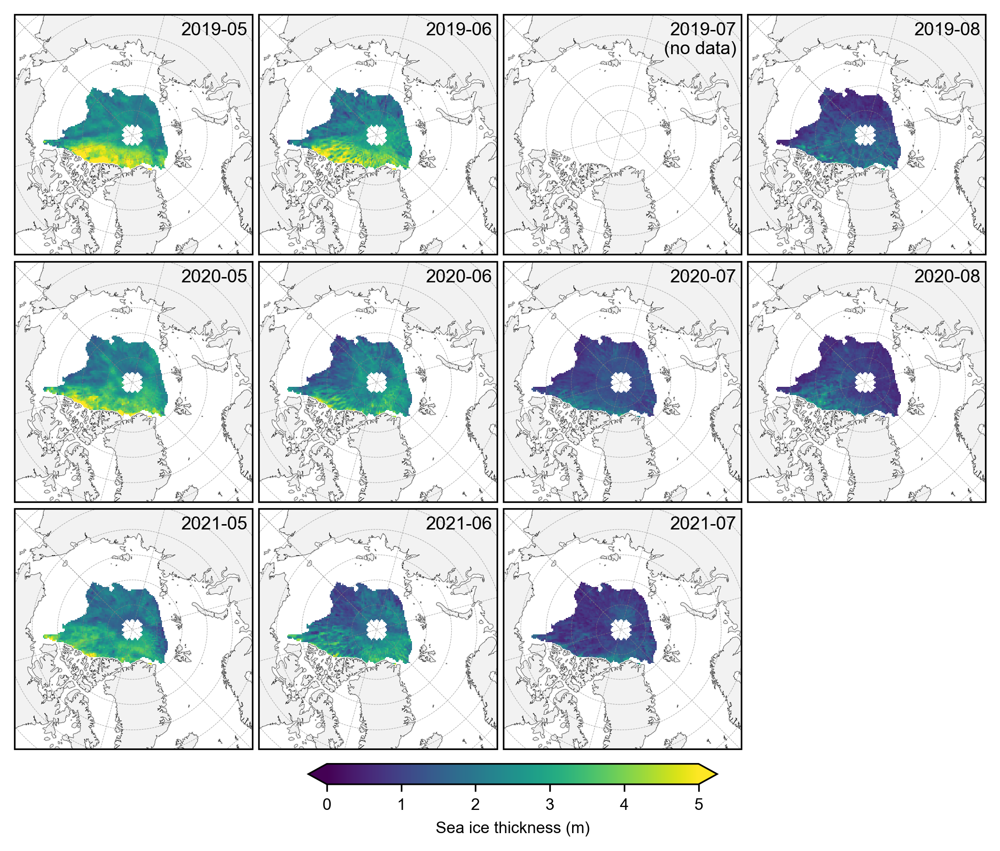
# Again group the data by year and plot the same maps as before but with the stricter mask applied.
yearly_means = IS2_CS2_summer_month_mask.ice_thickness_sm_int.groupby('time.year').mean(skipna=False)
yearly_means_CS2 = IS2_CS2_summer_month_mask.ice_thickness_cs2_ubris.groupby('time.year').mean(skipna=False)
yearly_means = yearly_means.assign_coords(source='IS2')
yearly_means_CS2 = yearly_means_CS2.assign_coords(source='CS2')
combined_data = xr.concat([yearly_means, yearly_means_CS2], dim='source')
#combined_data
# Plot IS-2 and CS-2 summer mean maps with the stricter mask applied.
panel_letters = ['(a) 2019 IS2/SMLG-'+reanalysis.capitalize(), '(b) 2020 IS2/SMLG-'+reanalysis.capitalize(), '(c) 2021 IS2/SMLG-'+reanalysis.capitalize(),
'(d) 2019 CS2/SMLG-M2', '(e) 2020 CS2/SMLG-M2', '(f) 2021 CS2/SMLG-M2']
fig_width=6.8
fig_height=5.4
im1 = combined_data.plot(x="longitude", y="latitude", col='year', row='source', transform=ccrs.PlateCarree(),
cmap="viridis", zorder=3, add_labels=False,
subplot_kws={'projection':ccrs.NorthPolarStereo(central_longitude=-45)},
cbar_kwargs={'pad':0.01,'shrink': 0.3,'extend':'both',
'label':'Sea ice thickness (m)', 'location':'bottom'},
vmin=0, vmax=5,
figsize=(fig_width, fig_height))
i=0
for i, ax in enumerate(im1.axes.flatten()):
ax.coastlines(linewidth=0.15, color='black', zorder=2)
ax.add_feature(cfeature.LAND, color='0.95', zorder=1)
ax.gridlines(draw_labels=False, linewidth=0.25, color='gray', alpha=0.7, linestyle='--', zorder=3)
ax.set_extent([-179, 179, 65, 90], crs=ccrs.PlateCarree())
ax.text(0.02, 0.93, panel_letters[i], transform=ax.transAxes, fontsize=7, va='bottom', ha='left')
ax.set_title('', fontsize=8)
i+=1
plt.savefig('./figs/maps_summer_thickness_comps_monthmask_'+reanalysis+'.png', dpi=300, facecolor="white")
plt.show()
plt.close()
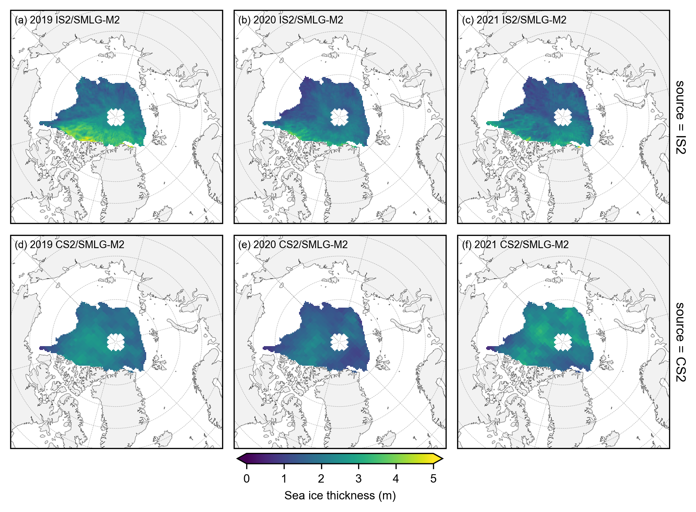
# plot the annual anomalies for each variable using the strict monthly masking
combined_data_anoms = xr.concat([yearly_means-yearly_means.mean(dim='year'), yearly_means_CS2-yearly_means_CS2.mean(dim='year')], dim='source')
panel_letters = ['(a) 2019 IS2/SMLG-'+reanalysis.capitalize(), '(b) 2020 IS2/SMLG-'+reanalysis.capitalize(), '(c) 2021 IS2/SMLG-'+reanalysis.capitalize(),
'(d) 2019 CS2/SMLG-M2', '(e) 2020 CS2/SMLG-M2', '(f) 2021 CS2/SMLG-M2']
fig_width=6.8
fig_height=5.4
im1 = combined_data_anoms.plot(x="longitude", y="latitude", col='year', row='source', transform=ccrs.PlateCarree(),
cmap="RdBu", zorder=3, add_labels=False,
subplot_kws={'projection':ccrs.NorthPolarStereo(central_longitude=-45)},
cbar_kwargs={'pad':0.03,'shrink': 0.3,'extend':'both', 'ticks': np.arange(-1.5, 1.6, 0.5),
'label':'thickness anomaly (m)', 'location':'bottom'},
vmin=-1.25, vmax=1.25,
figsize=(fig_width, fig_height))
# Add map features to all subplots
i=0
for i, ax in enumerate(im1.axes.flatten()):
ax.coastlines(linewidth=0.15, color='black', zorder=2)
ax.add_feature(cfeature.LAND, color='0.95', zorder=1)
ax.gridlines(draw_labels=False, linewidth=0.25, color='gray', alpha=0.7, linestyle='--', zorder=3)
ax.set_extent([-179, 179, 65, 90], crs=ccrs.PlateCarree())
ax.text(0.02, 0.93, panel_letters[i], transform=ax.transAxes, fontsize=7, va='bottom', ha='left')
ax.set_title('', fontsize=8)
i+=1
plt.gcf().subplots_adjust(bottom=0.17, wspace=0.03)
plt.savefig('./figs/maps_summer_thickness_anoms_monthmask_'+reanalysis+'.png', dpi=300, facecolor="white")
plt.show()
plt.close()
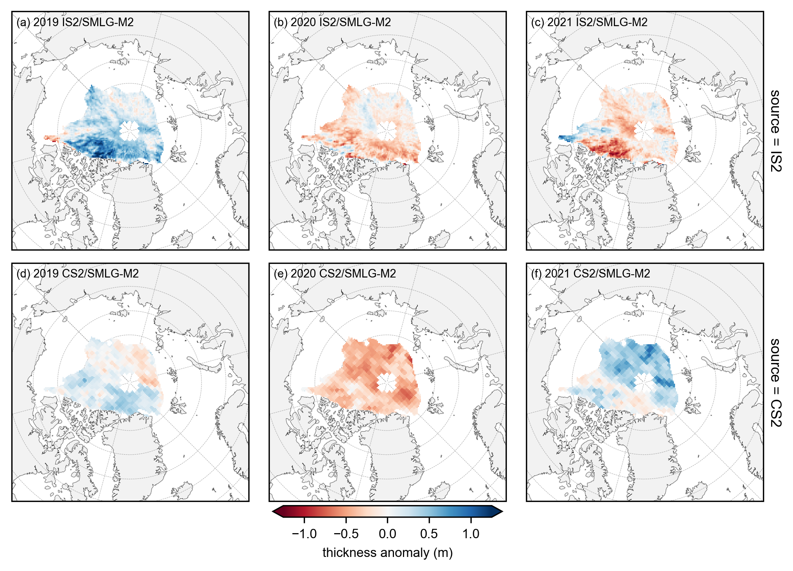
# Plot IS-2 and CS-2 summer anomaly mean maps using the stricter mask applied.
anoms = yearly_means - yearly_means_CS2
fig_width=6.8
fig_height=3.4
panel_letters = ['(g) 2019 IS2 - CS2', '(h) 2020 IS2 - CS2', '(i) 2021 IS2 - CS2']
im = anoms.plot(x="longitude", y="latitude", col_wrap=3, col='year', transform=ccrs.PlateCarree(), cmap="RdBu", zorder=3,
cbar_kwargs={'pad':0.01,'shrink': 0.3,'extend':'both', 'label':'thickness difference (m)', 'location':'bottom'},
vmin=-2.5, vmax=2.5,
subplot_kws={'projection':ccrs.NorthPolarStereo(central_longitude=-45)},
figsize=(fig_width, fig_height))
ax_iter = im.axes
i=0
for ax in ax_iter.flatten():
ax.coastlines(linewidth=0.15, color = 'black', zorder = 2) # Coastlines
ax.add_feature(cfeature.LAND, color ='0.95', zorder = 1) # Land
#ax.add_feature(cfeature.LAKES, color = 'grey', zorder = 5) # Lakes
ax.gridlines(draw_labels=False, linewidth=0.25, color='gray', alpha=0.7, linestyle='--', zorder=3) # Gridlines
ax.set_extent([-179, 179, 65, 90], crs=ccrs.PlateCarree()) # Set extent to zoom in on Arctic
ax.set_title('', fontsize=8, horizontalalignment="right",verticalalignment="top", x=0.97, y=0.95, zorder=4)
ax.text(0.02, 0.93, panel_letters[i], fontsize=7, transform=ax.transAxes, va='bottom', ha='left')
i+=1
plt.subplots_adjust(left=0.07, right=0.96, wspace=0.07, bottom=0.2)
plt.savefig('./figs/maps_summer_thickness_diff_monthmask_'+reanalysis+'.png', dpi=300, facecolor="white", bbox_inches='tight')
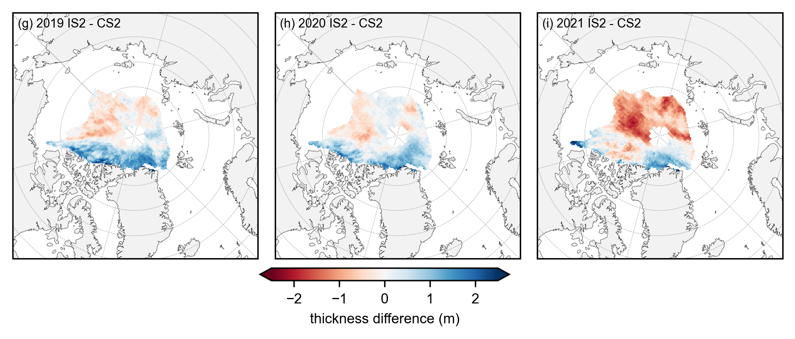
Let’s do the same for winter (Jan through April) to see if we get similar results.#
# Assuming 'IS2_CS2_allseason' is your dataset and 'ice_thickness_sm_int' is the variable of interest
winter_months = [1, 2, 3, 4] # May=5, June=6, July=7, August=8
# Select only the summer months
IS2_CS2_winter = IS2_CS2_allseason.sel(time=IS2_CS2_allseason.time.dt.month.isin(winter_months))
# Apply the masking
IS2_CS2_winter_month_mask, var1_null, var2_null, has_nulls = mask_and_concat_ice_thickness_monthly(IS2_CS2_winter)
# Generate the same monthly maps as before but with the stricter mask applied.
grouped_by_year = IS2_CS2_winter_month_mask.groupby('time.year')
# Create a figure with subplots
fig, axes = plt.subplots(nrows=len(grouped_by_year.groups), ncols=len(winter_months),
subplot_kw={'projection': ccrs.NorthPolarStereo(central_longitude=-45)},
figsize=(7, 6.1))
# Iterate over each year
for year_idx, (year, year_data) in enumerate(grouped_by_year):
#print(year_idx)# Group by month within each year
grouped_by_month = year_data.groupby('time.month')
for month_idx, (month, month_data) in enumerate(grouped_by_month):
ax = axes[year_idx, month_idx]
im = month_data.isel(time=0).ice_thickness_sm_int.plot(ax=ax, x="longitude", y="latitude",
transform=ccrs.PlateCarree(), cmap="viridis",
vmin=0, vmax=5, add_colorbar=False)
ax.set_extent([-179, 179, 66, 90], crs=ccrs.PlateCarree())
ax.text(0.98, 0.9, f'{year}-{month:02d}', transform=ax.transAxes, va='bottom', ha='right')
ax.set_title('')
ax.coastlines(linewidth=0.15, color = 'black', zorder = 2) # Coastlines
ax.add_feature(cfeature.LAND, color ='0.95', zorder = 1) # Land
#ax.add_feature(cfeature.LAKES, color = 'grey', zorder = 5) # Lakes
ax.gridlines(draw_labels=False, linewidth=0.25, color='gray', alpha=0.7, linestyle='--', zorder=3) # Gridlines
axes[2, 3].set_visible(False)
cbar = fig.colorbar(im, ax=axes, orientation='horizontal', extend='both', fraction=0.03, pad=0.1)
cbar.set_label('Sea ice thickness (m)')
plt.subplots_adjust(left=0.02, right=0.98, top=0.98, bottom=0.15, wspace=0.01, hspace=0.03)
plt.savefig('./figs/maps_is2_winter_months_monthlymask_'+reanalysis+'.png', dpi=300, facecolor="white")
plt.show()
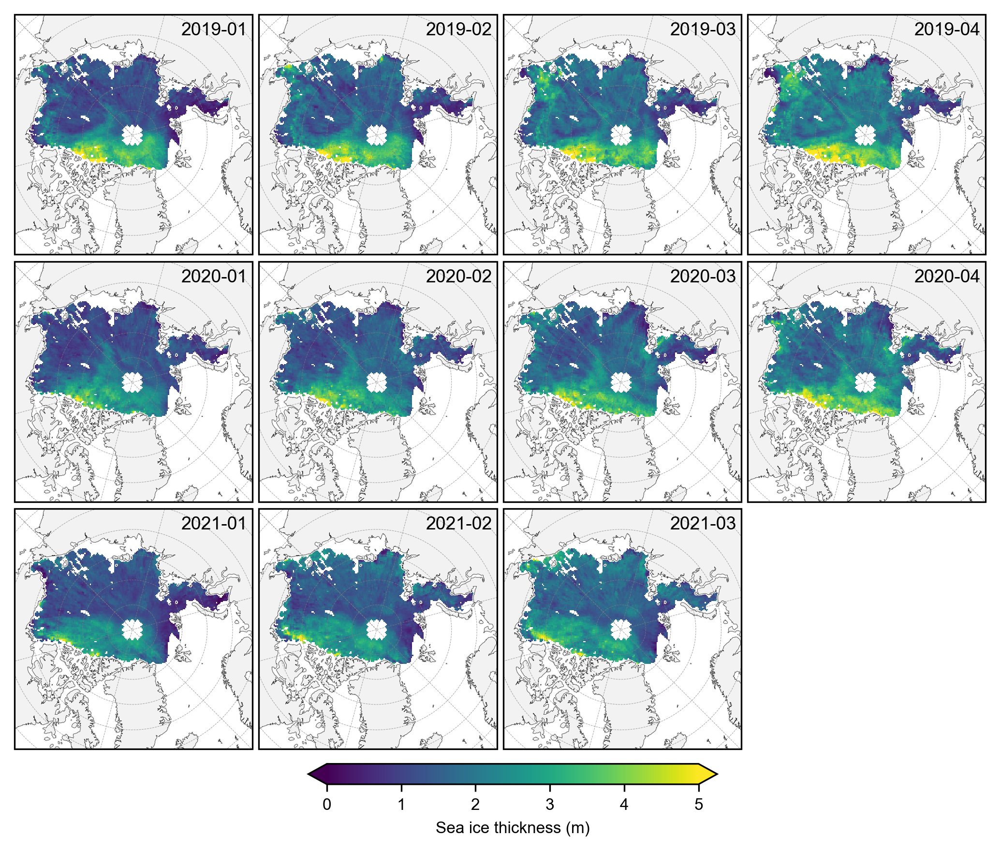
# Again group the data by year and plot the same maps as before but with the stricter mask applied.
yearly_means = IS2_CS2_winter_month_mask.ice_thickness_sm_int.groupby('time.year').mean(skipna=False)
yearly_means_CS2 = IS2_CS2_winter_month_mask.ice_thickness_cs2_ubris.groupby('time.year').mean(skipna=False)
yearly_means = yearly_means.assign_coords(source='IS2')
yearly_means_CS2 = yearly_means_CS2.assign_coords(source='CS2')
combined_data = xr.concat([yearly_means, yearly_means_CS2], dim='source')
#combined_data
# Plot IS-2 and CS-2 summer mean maps with the stricter mask applied.
panel_letters = ['(a) 2019 IS2/SMLG-'+reanalysis.capitalize(), '(b) 2020 IS2/SMLG-'+reanalysis.capitalize(), '(c) 2021 IS2/SMLG-'+reanalysis.capitalize(),
'(d) 2019 CS2/SMLG-M2', '(e) 2020 CS2/SMLG-M2', '(f) 2021 CS2/SMLG-M2']
fig_width=6.8
fig_height=5.4
im1 = combined_data.plot(x="longitude", y="latitude", col='year', row='source', transform=ccrs.PlateCarree(),
cmap="viridis", zorder=3, add_labels=False,
subplot_kws={'projection':ccrs.NorthPolarStereo(central_longitude=-45)},
cbar_kwargs={'pad':0.01,'shrink': 0.3,'extend':'both',
'label':'Sea ice thickness (m)', 'location':'bottom'},
vmin=0, vmax=5,
figsize=(fig_width, fig_height))
i=0
for i, ax in enumerate(im1.axes.flatten()):
ax.coastlines(linewidth=0.15, color='black', zorder=2)
ax.add_feature(cfeature.LAND, color='0.95', zorder=1)
ax.gridlines(draw_labels=False, linewidth=0.25, color='gray', alpha=0.7, linestyle='--', zorder=3)
ax.set_extent([-179, 179, 65, 90], crs=ccrs.PlateCarree())
ax.text(0.02, 0.93, panel_letters[i], transform=ax.transAxes, fontsize=7, va='bottom', ha='left')
ax.set_title('', fontsize=8)
i+=1
plt.savefig('./figs/maps_winter_thickness_comps_monthmask_'+reanalysis+'.png', dpi=300, facecolor="white")
plt.show()
plt.close()
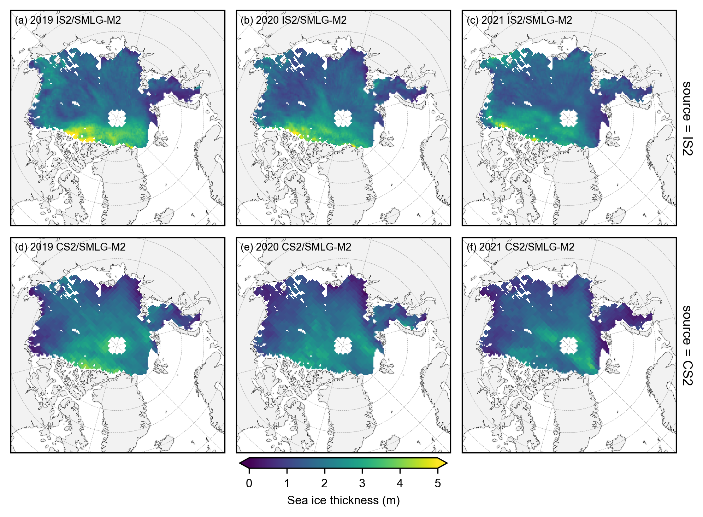
# plot the annual anomalies for each variable using the strict monthly masking
combined_data_anoms = xr.concat([yearly_means-yearly_means.mean(dim='year'), yearly_means_CS2-yearly_means_CS2.mean(dim='year')], dim='source')
panel_letters = ['(a) 2019 IS2/SMLG-'+reanalysis.capitalize(), '(b) 2020 IS2/SMLG-'+reanalysis.capitalize(), '(c) 2021 IS2/SMLG-'+reanalysis.capitalize(),
'(d) 2019 CS2/SMLG-M2', '(e) 2020 CS2/SMLG-M2', '(f) 2021 CS2/SMLG-M2']
fig_width=6.8
fig_height=5.4
im1 = combined_data_anoms.plot(x="longitude", y="latitude", col='year', row='source', transform=ccrs.PlateCarree(),
cmap="RdBu", zorder=3, add_labels=False,
subplot_kws={'projection':ccrs.NorthPolarStereo(central_longitude=-45)},
cbar_kwargs={'pad':0.03,'shrink': 0.3,'extend':'both', 'ticks': np.arange(-1.5, 1.6, 0.5),
'label':'thickness anomaly (m)', 'location':'bottom'},
vmin=-1.25, vmax=1.25,
figsize=(fig_width, fig_height))
# Add map features to all subplots
i=0
for i, ax in enumerate(im1.axes.flatten()):
ax.coastlines(linewidth=0.15, color='black', zorder=2)
ax.add_feature(cfeature.LAND, color='0.95', zorder=1)
ax.gridlines(draw_labels=False, linewidth=0.25, color='gray', alpha=0.7, linestyle='--', zorder=3)
ax.set_extent([-179, 179, 65, 90], crs=ccrs.PlateCarree())
ax.text(0.02, 0.93, panel_letters[i], transform=ax.transAxes, fontsize=7, va='bottom', ha='left')
ax.set_title('', fontsize=8)
i+=1
plt.gcf().subplots_adjust(bottom=0.17, wspace=0.03)
plt.savefig('./figs/maps_winter_thickness_anoms_monthmask'+reanalysis+'.png', dpi=300, facecolor="white")
plt.show()
plt.close()
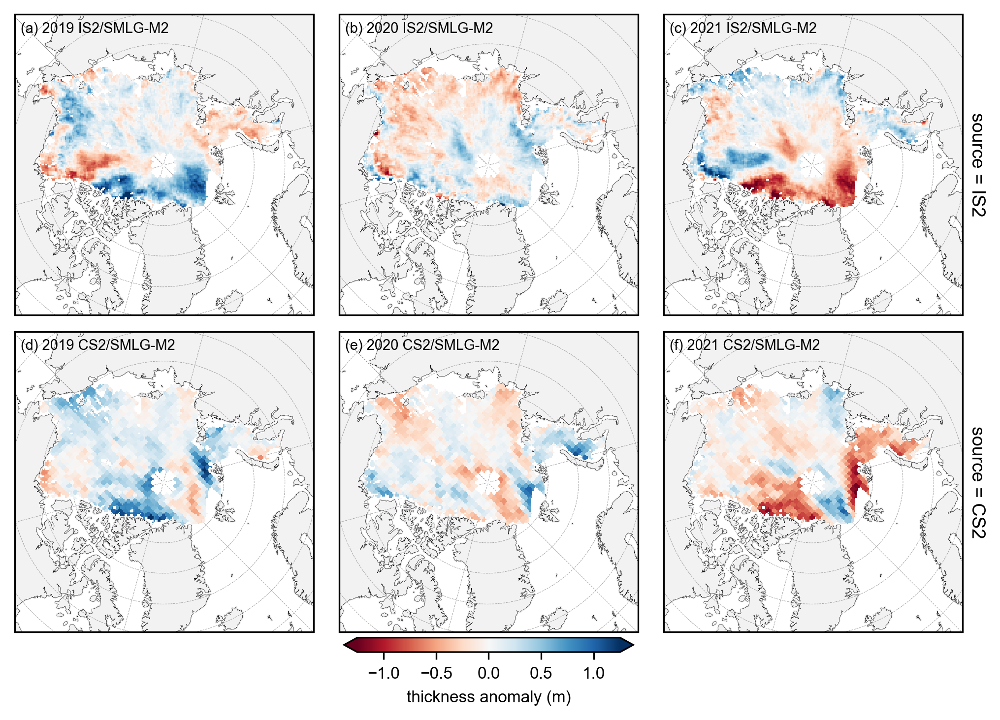
# Plot IS-2 and CS-2 summer anomaly mean maps using the stricter mask applied.
anoms = yearly_means - yearly_means_CS2
fig_width=6.8
fig_height=3.4
panel_letters = ['(g) 2019 IS2 - CS2', '(h) 2020 IS2 - CS2', '(i) 2021 IS2 - CS2']
im = anoms.plot(x="longitude", y="latitude", col_wrap=3, col='year', transform=ccrs.PlateCarree(), cmap="RdBu", zorder=3,
cbar_kwargs={'pad':0.01,'shrink': 0.3,'extend':'both', 'label':'thickness difference (m)', 'location':'bottom'},
vmin=-2.5, vmax=2.5,
subplot_kws={'projection':ccrs.NorthPolarStereo(central_longitude=-45)},
figsize=(fig_width, fig_height))
ax_iter = im.axes
i=0
for ax in ax_iter.flatten():
ax.coastlines(linewidth=0.15, color = 'black', zorder = 2) # Coastlines
ax.add_feature(cfeature.LAND, color ='0.95', zorder = 1) # Land
#ax.add_feature(cfeature.LAKES, color = 'grey', zorder = 5) # Lakes
ax.gridlines(draw_labels=False, linewidth=0.25, color='gray', alpha=0.7, linestyle='--', zorder=3) # Gridlines
ax.set_extent([-179, 179, 65, 90], crs=ccrs.PlateCarree()) # Set extent to zoom in on Arctic
ax.set_title('', fontsize=8, horizontalalignment="right",verticalalignment="top", x=0.97, y=0.95, zorder=4)
ax.text(0.02, 0.93, panel_letters[i], fontsize=7, transform=ax.transAxes, va='bottom', ha='left')
i+=1
plt.subplots_adjust(left=0.07, right=0.96, wspace=0.07, bottom=0.2)
plt.savefig('./figs/maps_winter_thickness_diff_monthmask_'+reanalysis+'.png', dpi=300, facecolor="white", bbox_inches='tight')
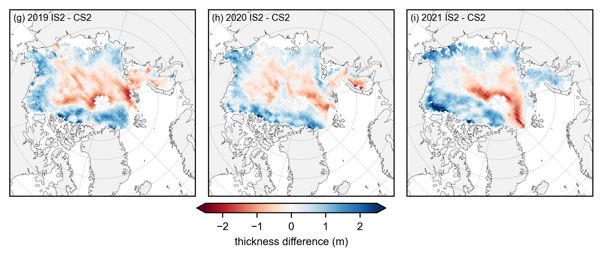